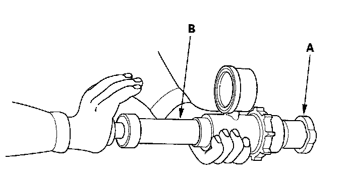

Radiator Cap: Testing and Inspection
Radiator Cap Test1. Remove the radiator cap (A). Wet its seal with engine coolant, then install it on a commercially available pressure tester (B).

2. Apply a pressure of 93-123 kPa (0.95-1.25 kgf/cm2, 14-18 psi).
3. Check for a drop in pressure.
4. If the pressure drops, replace the cap.